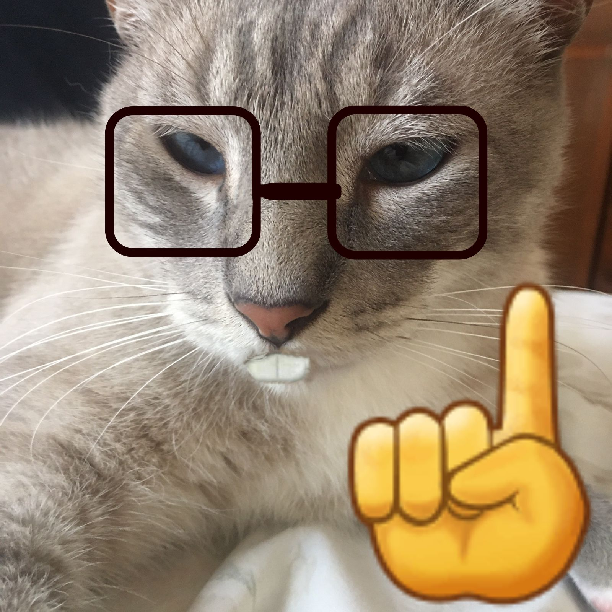

Buenas Tardes, Soy Víctor Santana
Esta es mi tercera pagina web y hablare un poco sobre mi, tengo 20 años y estos en el final de mi tercer año de la carrera ingenieria civil en computacion e informatica,
Mis pasatiempos son:
- jugar al Uma musume(GOTY)
- jugar juegos en Steam buscando el platino en todos estos
- paso el tiempo jugando en el Taca-Taca(Profesional)
- leo mangas de buena natarriva y personajes

Haga clic aquíc